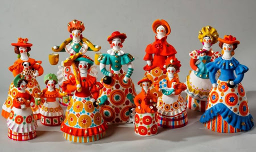
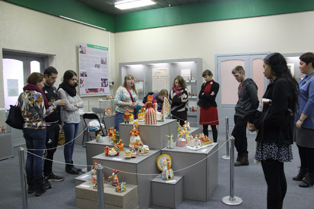

The Museum of Dymkovskaya Toy
In the building of our organization, located in the historical center of the city, the Museum of "Dymkovskaya Toy: history and modernity" has been receiving guests from all over the world for several decades. As the museum is the part of the structure of the craft, this allows the visitor, if desired, to book not only a fascinating tour, but also a meeting with a craftswoman, and see how a toy is born from a lump of clay in the skillful hands of the master.
The museum has a large, constantly replenished collection of Dymkovskaya toys (more than 1000 exhibits), as well as a rich archival heritage of the craft (documents, photographic materials, exhibition catalogues, booklets, posters, review books, paintings and sculptures by Kirov artists with images of craftswomen, etc.).
The exposition of the museum reveals the stages of development of the Dymkovsky craft from the last third of the XIX century to the present day. There are the works of the famous craftswomen of the Dymkovskaya toy, who worked in the homeland of the craft (in the settlement of Dymkovo), and also the creativity of other generations of craftswomen who came to the craft, starting from the mid-1950s.

An important part of the exposotion is a wall painting by the famous Vyatka painter, People's Artist of Russia V. G. Kharlov, which reveals the history of the craft and its significance in the Vyatka culture. In addition to the permanent exposition, the thematic exhibitions of Dymkovskaya toys with the participation of modern craftswomen are held in the museum, as well as temporary exhibitions of folk art crafts of the Kirov region and other regions, works of Vyatka artists, etc.
The history of the museum dates back several decades. The formation of his collection began in the late 1950s. It was born from the assortment cabinet, which was used on the land of the Dymkovskaya toy of the Kirov department of the Art Fund of the RSFSR to train the younger generation of craftswomen. Many toys served as the subject of copying, both in modeling and in painting. The most important role in the formation of the collection was played by E. A. Okisheva (1927-2007), who carried out the artistic management of the craft. She was collecting information on the history of toys, biographical information about the craftswomen, and was saving the works of the oldest craftswomen. At first, the future collection of the museum occupied only a few shelves on the shelf.

- At the end of the 1960s, under the guidance of the craftswoman A.M. Trefilova (1949-1994), an inventory and analysis of the collection by masters were made
- In the 1970s and 1980s, the museum was replenished with the works of craftswomen of the following generations. These were purchases from various exhibitions. The museum collection was replenished at the expense of the local budget and the funds of the Ministry of Culture of the RSFSR. Some of the toys were gifted by the craftswomen themselves.
- In 1981, a building was built for the craftswomen of the Dymkovskaya toy at the address 67 Svobody street, where a place was allocated for the museum, which was decorated according to all the rules of museum business by the artist A. Andreev.
- In 2011, with the support of the Kirov Administration, a new modern exposition "Dymkovskaya Toy: History and Modernity" was opened in the building of the organization. The reason for this was the urgent need and numerous wishes of the guests of the city to have a permanent and accessible to the mass visits exposition on the history of craft.
ТNow the museum has become a place where not only Kirov residents come, but also numerous guests of our city, including foreigners. Also university students practice in our museum, including students from other cities.
The anniversary meetings, round tables, and various classes are held in the museum. For the convenience of visitors, on the 1st floor of the building there is a brand store of the SHR-NHP "Dymkovskaya Toy", where everyone can buy an authentic Dymkovskaya toy, approved by the Art Council of the craft.